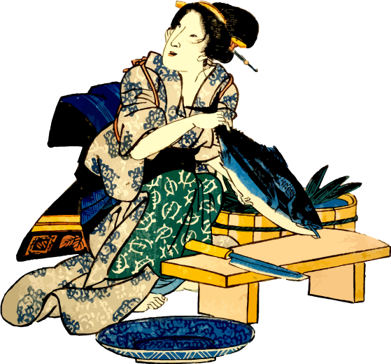

Inicial · N5
Primeros pasos
はじめの一歩
Para quienes arrancan de cero. Frases y expresiones básicas del día a día: te presentás, pedís, preguntás y entendés tus primeras lecturas.
- Hiragana y katakana completos
- Primeros kanji y vocabulario esencial
- Frases y expresiones básicas del día a día
- Fonética desde la primera clase
Ideal para principiantesMás info →